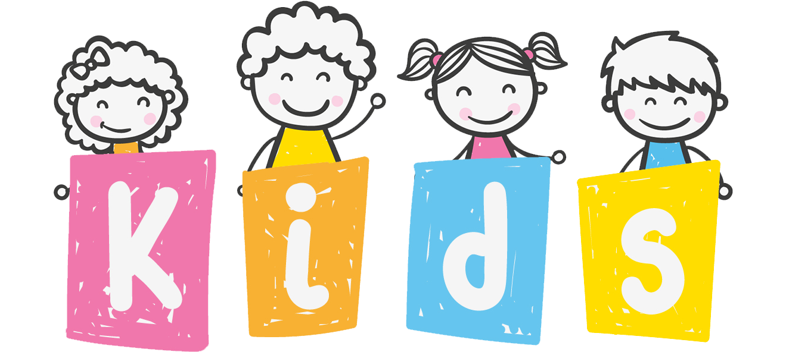

Home
activitys
adresse
programs
Multilingual education
Your children learn at a very well studied pace, the 3 languages: Arabic, French and English.
nteractive pedagogy
active and interactive pedagogy, inspired by the great French and English nursery schools.